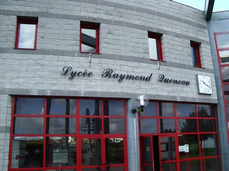
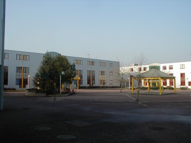
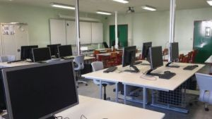
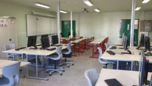
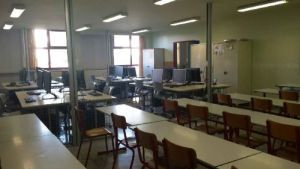
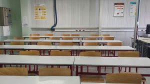

Le Lycée Raymond Queneau d'Yvetot est un établissement jeune : les premières classes de seconde Générale ont été ouvertes en septembre 1988, en complément des classes d'enseignement professionnel qui préexistaient.
A la rentrée 2015, le lycée héberge environ 1468 élèves dont 1039 demi-pensionnaires et 53 internes (28 filles et 25 garçons).Le nombre maximum de place est de 60 (30 filles et 30 garcons).
 
Une grande majorité des effectifs est constituée par les élèves du lycée général et technologique.
Le lycée Raymond Queneau est situé dans une zone semi-rurale, démographiquement dynamique, caractérisée par une population jeune et fortement ouvrière.
Situé entre une zone industrielle et un hypermarché qui représentent des pôles d'attraction naturels pour les lycéens ; cette situation pose la question de la gestion des heures libres entre les cours.
Le lycée doit continuer à s'affirmer comme un lycée de qualité, qui affiche une cohérence des pôles de formation et qui impose sa place, son prestige, par son image, ses résultats, la qualité de la vie scolaire et le niveau de ses offres de formations.
Le laboratoire BTS est un lieu exclusivement réservé au personnel membre du BTS. Il y est possible de s'y rendre en dehors des heures de cours, pour travailler, surfer sur internet, ou tout simplement se retrouver. Tout le matériel nécessaire à la bonne formation de l'étudiant est mis à sa disposition. Le bâtiment est divisé en deux zones, une pour les cours et devoirs, une pour les travaux pratiques.
 
 